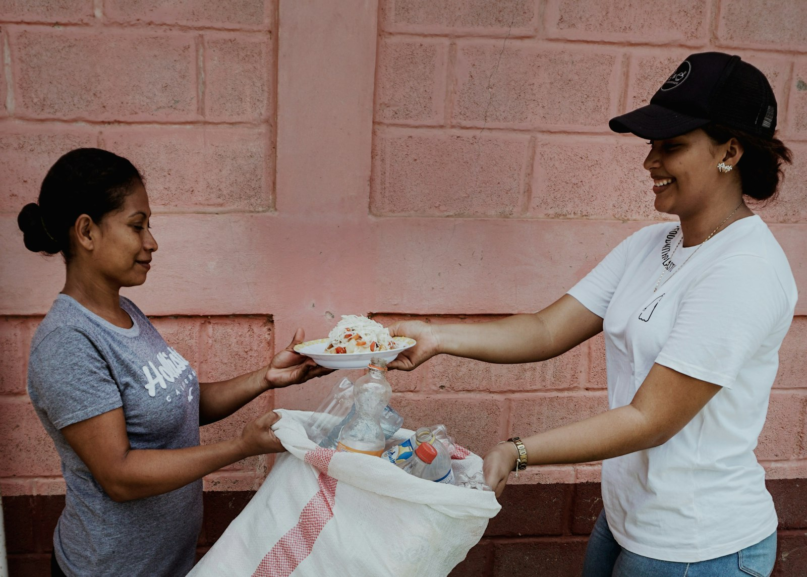

02 — Existing Practice
Current CSR: Community & Philanthropy
Ramadan · Strength
PizzaBurg has provided pizzas to mosques for iftar, reported by Dhaka Tribune.
Christmas · Strength
Employees dress as Santa Claus and distribute free pizzas to disadvantaged children, reported by Dhaka Tribune.
Reading — Carroll's CSR Pyramid
Both fall under Carroll's philanthropic responsibility — voluntary contributions tied to a specific occasion.
Ramadan
Christmas
 Illustrative
Illustrative
IllustrativePizzaBurg · CSR
02/04
Community